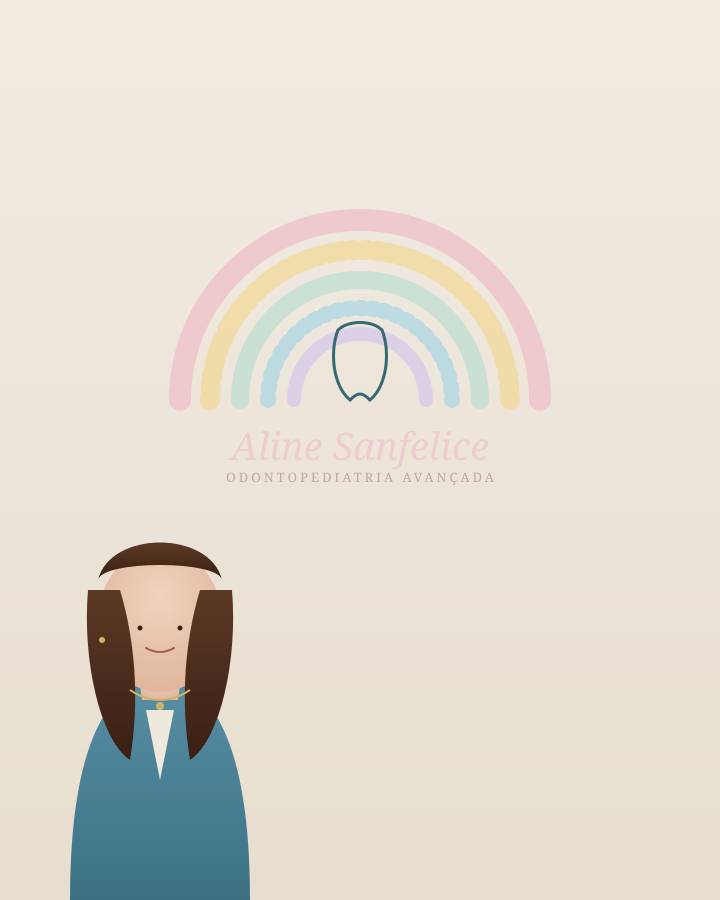
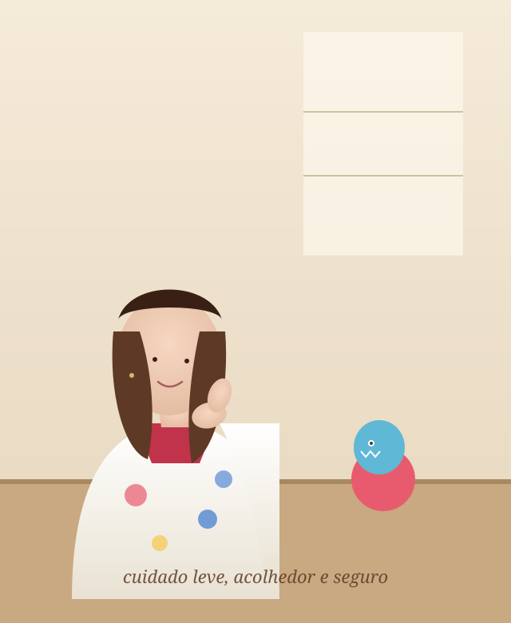
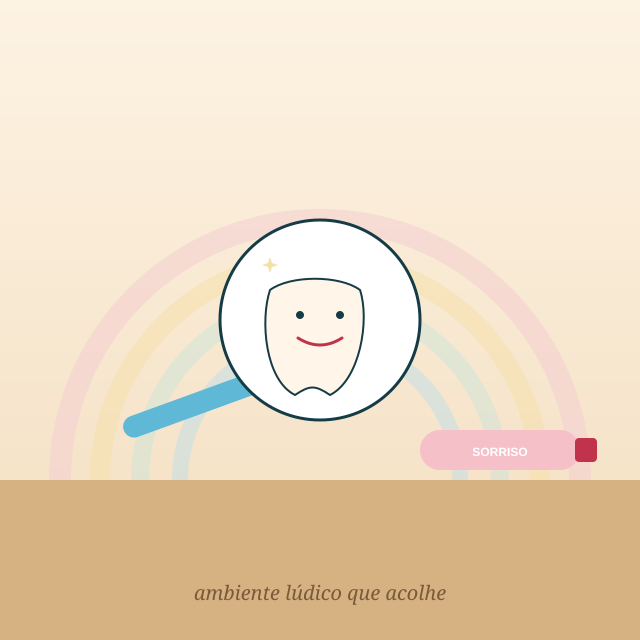
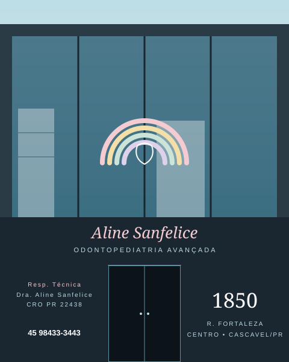

O cuidado que o sorriso do seu filho merece.
Atendimento odontopediátrico leve, seguro e acolhedor para que crianças e famílias construam uma relação mais tranquila com a saúde bucal.

- Atendimento pensado para cada fase da infância
- Cuidado acolhedor para crianças e famílias
- Abordagem individualizada
- Atendimento em Cascavel

Um atendimento que começa antes mesmo de sentar na cadeira.
Cada criança possui seu próprio tempo, suas experiências e sua forma de demonstrar insegurança. Por isso, o atendimento é conduzido com escuta, paciência e respeito, criando uma relação de confiança que favorece tanto o cuidado atual quanto os hábitos de saúde bucal para o futuro.
A proposta é tornar cada etapa mais compreensível para a criança e mais tranquila para a família — do primeiro contato ao acompanhamento ao longo do tempo.
-
Acolhimento
Comunicação clara, sem pressão e respeitando o ritmo de cada criança.
-
Adaptação gradual
Apresentar o ambiente e cada etapa de forma compreensível para o pequeno paciente.
-
Cuidado individualizado
Avaliação e planejamento conforme a necessidade e o histórico de cada criança.
-
Parceria com os pais
Orientações práticas para prevenção e continuidade do cuidado em casa.
Uma jornada pensada para crianças e suas famílias.
Cada etapa foi desenhada para reduzir inseguranças e construir confiança aos poucos, no ritmo da criança.
Cuidados que acompanham cada fase do desenvolvimento.
Da prevenção aos procedimentos mais complexos, o atendimento é conduzido com responsabilidade e linguagem acessível para os responsáveis.
A indicação de cada procedimento depende de avaliação individual realizada por profissional habilitado.
Quando o cuidado também precisa trazer mais tranquilidade.
A sedação odontológica pode ser considerada em situações específicas, mediante avaliação individual. Sua indicação depende de fatores como a necessidade do procedimento, a idade, o comportamento, o histórico e a segurança do paciente.
Não é uma solução universal nem um recurso aplicado de forma automática. A conversa com a família é parte essencial dessa decisão.
Conversar sobre o atendimentoUm espaço preparado para acolher, explicar e criar confiança.
O ambiente, a comunicação e a maneira como cada etapa é apresentada fazem parte da experiência. Elementos lúdicos ajudam a criança a conhecer o universo odontológico de forma mais leve, enquanto os responsáveis acompanham todo o processo com mais clareza.
- Linguagem adaptada ao universo da criança
- Recursos lúdicos para reduzir o medo do desconhecido
- Participação dos responsáveis em cada etapa


Diferentes especialidades, o mesmo compromisso com o cuidado.
Profissionais com áreas de atuação complementares para um atendimento mais completo, com foco em segurança, acolhimento e individualização.
Toda dúvida tem espaço em uma conversa cuidadosa.
Reunimos algumas situações comuns relatadas por famílias. Toque em cada uma para ler uma resposta acolhedora e responsável.
Tudo que costuma surgir antes da primeira consulta.
Se a sua dúvida não estiver aqui, fale com a clínica pelo WhatsApp. Sempre que possível, é melhor uma conversa direta com a equipe.
No coração de Cascavel, em um espaço pensado para famílias.
A clínica fica no Centro, com fácil acesso para quem se desloca pelo município ou pela região oeste do Paraná.
-
Endereço
R. Fortaleza, 1850 — Centro
Cascavel — PR • 85810-051 - Horários Segunda a sexta • até às 18h
- Contato direto (45) 98433-3443
Uma experiência mais tranquila pode começar com uma conversa.
Entre em contato para tirar dúvidas e conhecer melhor a proposta de atendimento. Respondemos em horário comercial.
- CidadeCascavel — PR
- Instagram@alinesanfelice
- Responsável técnicaDra. Aline Sanfelice • CRO-PR 22438
- Telefone
- Endereço
- Horários